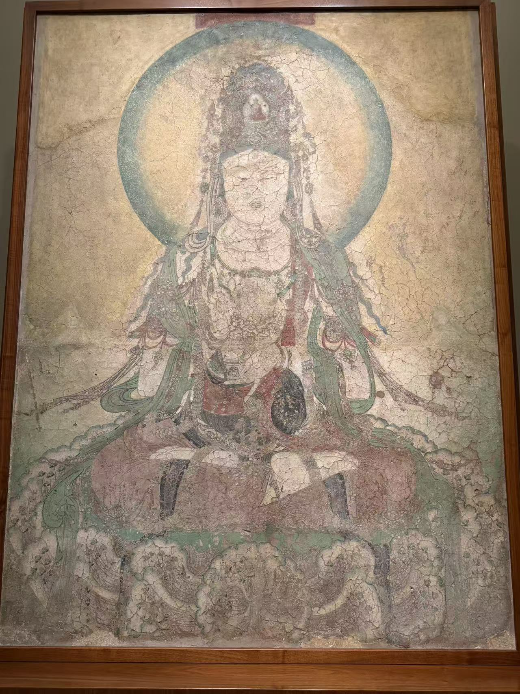
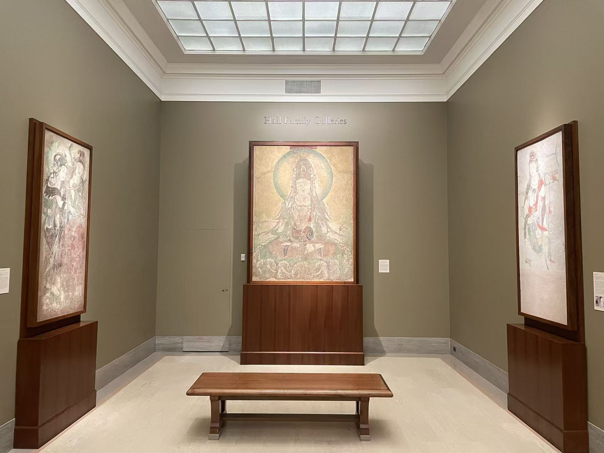

五代 / 寺院壁画
如意轮观音坐像
看画
点击照片可放大；有多张照片时，可以切换查看。


作品札记
观音正面端坐，圆形头光在身后展开；高冠、胸前的璎珞与下方莲座，使画面沿着中轴一层层展开。先看双手之间，再看衣纹怎样绕过双膝，比一开始就追逐满身细饰更容易读出身体的结构。
现场展签以冠中的阿弥陀佛小像辨认观音，又把双手间云气托起的轮形或珠形物，与“如意宝珠”和“法轮”相联系，题作如意轮观音。馆方认为，这样的主尊原会居于寺院墙面的中心，旁有其他供养、胁侍形象。
纳尔逊把它定为后周广顺年间（951—953）。这组壁画的断代有过变化：2021年的研究摘要回顾了何惠鉴（Wai-kam Ho）据画上纪年提出五代断代的过程，也对纪年依据与如意轮观音的具体身份提出讨论。这里沿用馆方题名，画中的持物仍值得细看。
展厅中的三件壁画
点击照片可放大；有多张照片时，可以切换查看。

